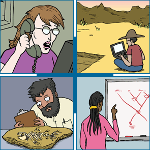
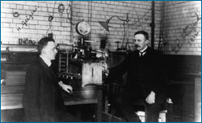
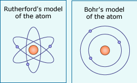

The progress of science depends on interactions within the scientific community - that is, the community of people and organizations that generate scientific ideas, test those ideas, publish scientific journals, organize conferences, train scientists, distribute research funds, etc. This scientific community provides the cumulative knowledge base that allows science to build on itself. It is also responsible for the further testing and scrutiny of ideas and for performing checks and balances on the work of community members.
In addition, much scientific research is collaborative, with different people bringing their specialized knowledge to bear on different aspects of the problem. For example, a 2006 journal article on regional variations in the human genome was the result of a collaboration between 43 people from the U.K., Japan, the U.S., Canada, and Spain! Even Charles Darwin, who initially investigated the idea of evolution through natural selection while living almost as a hermit at his country estate, kept up a lively correspondence with his peers, sending and receiving numerous letters dealing with his ideas and the evidence relevant to them.
In rare cases, scientists do actually work in isolation. Gregor Mendel, for example, figured out the basic principles of genetic inheritance as a secluded monk with very little scientific interaction. However, even in such cases, research must ultimately involve the scientific community if that work is to have any impact on the progress of science. In Mendel's case, the ultimate involvement of the scientific community through his published work was critical because it allowed other scientists to evaluate those ideas independently, investigate new lines of evidence, and develop extensions of his ideas. This community process may be chaotic and slow, but it is also crucial to the progress of science.
A SCIENCE PROTOTYPE: RUTHERFORD AND THE ATOM
Though Ernest Rutherford came up with the idea that atoms have positively charged nuclei, the research that led to this idea was a collaborative effort: Rutherford was assisted by Hans Geiger, and the critical alpha-scattering experiment was actually carried out by Ernest Marsden, an undergraduate student working in Rutherford's lab.
Furthermore, after his discovery of the layout of the atom, Rutherford published a description of the idea and the relevant evidence, releasing it to the scientific community for scrutiny and evaluation. And scrutinize they did. Niels Bohr noticed a problem with Rutherford's idea: there was nothing keeping the orbiting electrons from spiraling into the nucleus of the atom, causing the whole thing to collapse! Bohr modified Rutherford's basic model by proposing that electrons had set energy levels, which helped solve the problem and earned Bohr a Nobel Prize. Since then, many other scientists have built on and modified Bohr's model.
